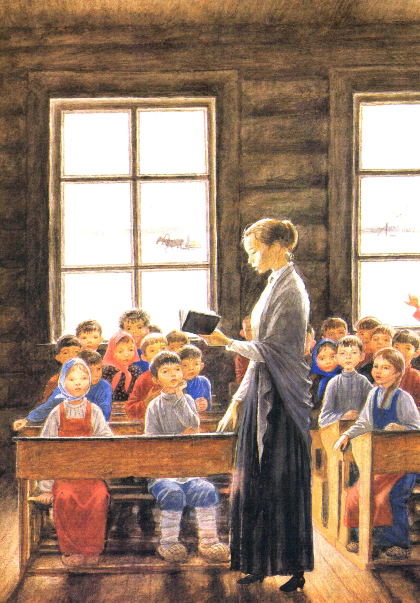
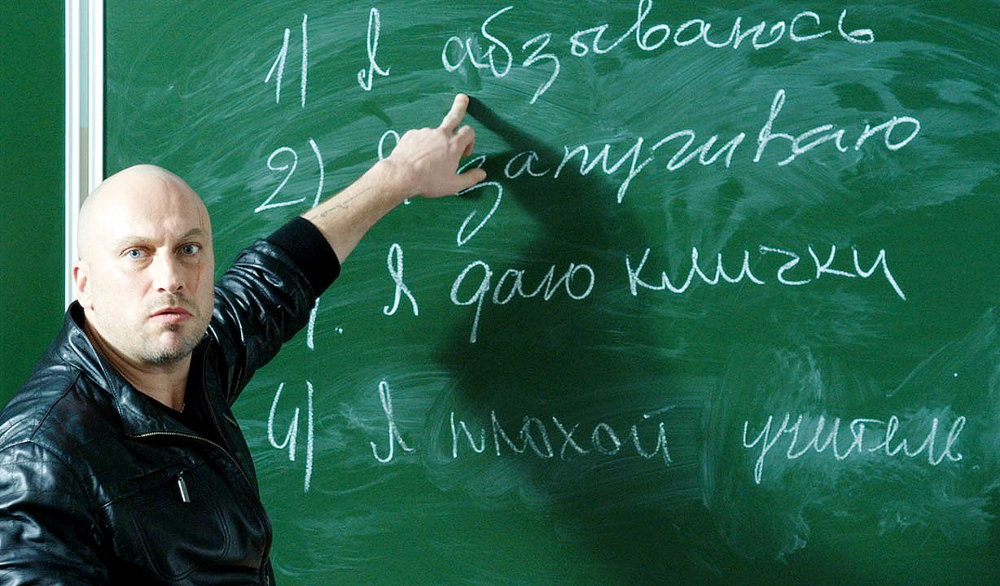
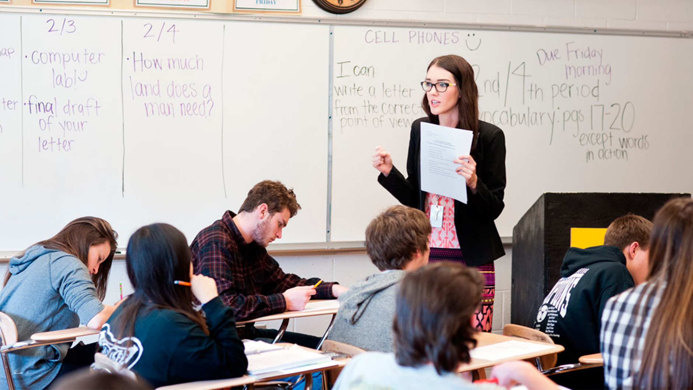

Немного истории
Описание не будет полным без краткого исторического обзора. Корни этой профессии уходят в древние времена. Сначала её не выделяли отдельно. Просто старшее поколение передавало свои знания и навыки младшему. Благодаря такой преемственности первобытное общество развивалось.

Первые упоминания об учителях, как о представителях отдельной профессии, встречаются у Конфуция. Мудрец писал, что педагоги должны передавать новые знания. Большой рывок в развитии сферы происходит в Древней Греции. Здесь появляются первые общественные учебные заведения – школы и лицеи. Древнегреческие мудрецы часто выступают в роли преподавателей в своих учреждениях. В Средние века образование становится обязательным для правителей и монахов. Появляются университеты.
В эпоху Нового времени образование становится массовым. Учится практически вся знать. Образование могут получать и девушки. Для них создаются специальные закрытые институты, где изучаются иностранные языки, музыка, правила хорошего тона. Молодые люди получают военные специальности. В это же время становится популярным обучение на дому.
Позднее открываются общественные и воскресные школы. Теперь доступ к образованию получают и простолюдины. Охватывать абсолютно всё население учёба стала в советское время. Тогда открылись школы практически в каждой деревне. В этот же период профессия педагога стала одной из самых распространённых.
Чем занимается учитель?
О профессии учителя можно говорить долго, поскольку она одна из самых творческих, у неё много плюсов и минусов. Тем не менее, работа не лишена и рутинных элементов, таких, как проверка тетрадей или составление планов. Чтобы добиться успеха, учитель должен хорошо выполнять все задачи, которые перед ним стоят. Что входит в круг обязанностей педагога?
- Составление рабочей программы и календарного планирования. Педагоги каждый год разрабатывают план на весь учебный период. Они расписывают цели и задачи курса, намечают, каких результатов должны достичь ученики, какими знаниями и навыками обзавестись.
- Составление поурочных планов. Каждый вечер, готовясь к завтрашнему дню, педагог подробно расписывает ход урока, пытается предугадать реакцию учеников и их возможные вопросы и ответы.
- Выбор наиболее эффективных методов работы. Учитель решает, как и в какой форме провести урок, как подать материал, чтобы дети максимально его усвоили.
- Проверка тетрадей. Ещё один рутинный элемент. Преподавателям математики и русского языка приходится этим заниматься практически каждый день: выискивать ошибки, читать сочинения, написанные не всегда красивым и разборчивым почерком, исправлять неточности и т. д.

- Составление различных официальных бумаг: рекомендательных писем, описаний, характеристик и т. д.
- Заполнение журнала. Эта работа требует внимательности и сосредоточенности, т. к. здесь ошибаться нельзя.
- Проведение уроков. Каждый день учитель выступает перед аудиторией, рассказывает о чём-либо и т. д.
- Контроль. Педагог должен следить за детьми, их поведением, уметь направлять их энергию.
- Выставление оценок. Преподаватель должен делать это объективно и беспристрастно.
- Ведение кружков и секций по интересам.
- Научная деятельность. Во многих школах проводятся конференции, где дети выступают со своими докладами и исследованиями. Направляют эту деятельность опять же учителя.
- Самообразование. Это та профессия, где обучение длится всю жизнь, т. к. всё вокруг постоянно меняется, открываются новые факты, проводятся исследования и пр. Учитель, чтобы идти в ногу со временем, должен быть в курсе происходящего в мире. Также для проведения качественного урока необходимо хорошо знать свою предметную область.
- Проведение родительских собраний.
- Организация различных мероприятий внутри школы или класса.
- Сопровождение групп школьников при выходах на различные мероприятия, выставки, турпоходы и пр.
Требования к педагогу
Как видно, деятельность учителя многообразна. Поэтому к представителям данной профессии предъявляются высокие требования. Педагог сам должен многое знать и уметь, постоянно учиться и развиваться. Это несомненный плюс. С другой стороны, работа с детьми требует постоянного нервного напряжения, что является минусом данной профессии. Необходимо дополнить описание перечнем качеств, которыми должен обладать учитель. От него требуется:
- Отличное знание предмета;
- Умение ладить и общаться с детьми как начальных, так и старших классов, находить общий язык;
- Подбирать индивидуальный подход при подаче материала;
- Владение ораторским искусством;
- Коммуникативные и организационные навыки;
- Гибкость;
- Умение быстро принимать решения;
- Любовь к детям;
- Творческий подход к преподаванию;
- Умение перестраивать учебный процесс и при необходимости отклоняться от плана, чтобы добиться поставленных целей;
- Быстро ориентироваться в ситуации;
- Умение решать педагогические задачи;
- Грамотность, так как учить не может тот, кто сам допускает ошибки, в том числе и в правописании;
- Психологический подход;
- Педагог должен найти общий язык не только с каждым ребёнком, но и с родителями;
- Широкий кругозор, как правило, интересы детей редко ограничиваются одной предметной областью;
- Быть справедливым, беспристрастным;
- Ответственность;
- Быть стрессоустойчивым, т. к. работа с детьми требует большого внимания и напряжения;
- Внимательность и хорошая память;
- Быть примером для подражания (часто именно на поведение учителей равняются дети);
- Терпеливость (без этого добиться результата не получится).
Плюсы и минусы профессии учитель
У любой профессии плюсы и минусы неизбежны.
Плюсы
- Общение с детьми;
- Умственная работа;
- Стабильность в работе;
- Длительный отпуск;
- Признание со стороны общественности.
Минусы
- Большая ответственность;
- Невысокая заработная плата;
- Психологическое давление;
- Стрессовые ситуации.
В специальности учителя всегда можно найти способ для самореализации. Многие плюсы и минусы этой сферы деятельности носят субъективный характер, например, кому-то нравится продумывать всё до мелочей, составляя план, а для кого-то это мука.

Работать учителем не всегда просто. Это, прежде всего, большая ответственность, т. к. в руках педагогов будущее страны. Именно в школьные годы происходит становление личности. И не последнюю роль в этом играют учителя!
Авторы: Сасонские Мария и Анастасия